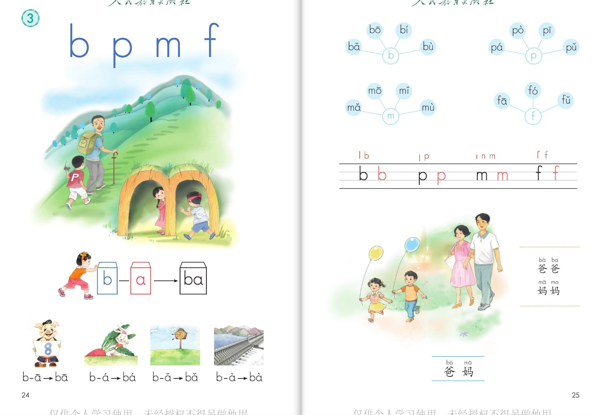

×
🔊 手机听不到声音怎么办？
① 先把手机
媒体音量调大，确认没开静音、没连蓝牙耳机；在微信里打开的，点右上角「⋯ → 用浏览器打开」。
② 还是没声音？到应用商店免费下载
Microsoft Edge 浏览器（它自带朗读发声），用它打开本页面就能出声。
③ 换了 Edge 仍然没声音，说明这部手机的
硬件/系统不支持网页朗读（多为老旧机型）；近几年买的新手机一般都能正常播放。
→ 打开声音自检
统编版 · 一年级上册 · 第二单元 · 汉语拼音 3
拼音 3 · b p m f
四个声母：右下半圆 bbb，右上半圆 ppp，两个门洞 mmm，伞柄朝上 fff
课本第 24~25 页，学两拼音节
认声母拼音环两拼方法闯关 8 题
这一课学什么：认识四个声母 b、p、m、f，学两拼音节的方法（b—a→ba），
还会读「爸爸」「妈妈」两个词语。声母要读得又轻又短。发音方法以课本和老师教的为准。
① 认一认 · 四个声母
课本第 24 页点卡片听口诀，声母要读得轻短
b 和 p 比一比：b 半圆在右下（像收音机），p 半圆在右上（像气球）。认清上下不认错。🎈
② 拼一拼 · 拼音环
课本第 25 页点环卡听拼读
两拼音节 · 拼读方法
前音轻短后音重，两音相连猛一碰。如 b—a→ba。
💡 声母 b 读得轻、短，韵母 a 读得响、长，一碰就出来 ba。
四声拼读 · b—a→ba
💡 八、拔、把、爸——同一个音节，戴上不同声调帽子，意思就不一样。
③ 写一写 · 四线格
课本第 24 页先看写法，再动笔
④ 词语读一读
课本第 25 页点词卡跟读
轻声小提示：「爸爸」「妈妈」的第二个字要读得又轻又短，这叫轻声。🗣️
⑤ 闯关 · 8 题
点题目可以听题，点选项就判对错，答完自动算分
已经答 0 题，答对 0 题。
课本原页 · 第 24~25 页点图放大

第 24~25 页 · b p m f · 拼音环 · 两拼音节 · 爸爸妈妈